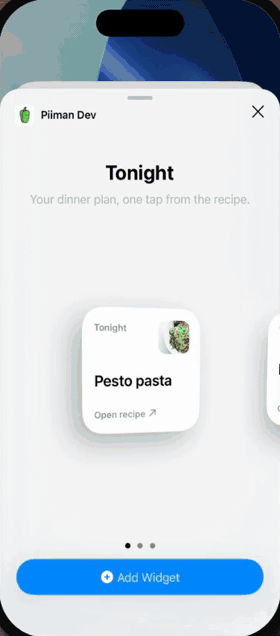
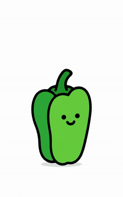

Every day I have to decide what to eat. It is a small problem. Nobody loses sleep over it. But I face it every single day, and a small problem you face every day ends up costing more than a large one you face once.
When I looked at it closely, there were two problems inside the one. The first is that you don't know what to eat. The second is that even when you do know, the ingredients aren't at home, so you can't cook it anyway. Solving the first without the second gets you nowhere. You decide on pesto pasta at six in the evening and discover you have no basil.
Two causes
So I made an app. It is called Piiman, the Japanese word for bell pepper, which is my favorite vegetable. It saves recipes from the places you already find them and lets you put them on the days you plan to cook.
Why build one more
There are already many apps like this. People treat that as a reason not to build another. I read it the other way. A crowded category tells you the problem is real. And none of those apps were made for me.
I wanted one I could shape to how I cook. I am fairly sure that if I enjoy using something every day, a lot of other people will too. The most reliable way I know to make something people want is to be one of the people who want it.


The part nobody sees
The thing I spent the most time on is the least visible. Piiman uses AI to read a recipe out of a video or a web page. The trouble with AI is that it fills gaps with confidence. A recipe app that adds an ingredient the cook never used is worse than one that does nothing, because you find out at the stove.
So I hold the import to two rules that pull against each other. It must not invent anything that isn't in the source. And it must get out of the source everything that is there. Either rule alone is easy to satisfy: say nothing, or say everything. Satisfying both at once is most of the work.

No ingredient may appear that isn't in the original recipe.
Everything the source does say should make it into the recipe.
The part that does nothing
The feature I like most took far less effort. A small widget on the home screen shows what you are eating today, so there is a little thing to look forward to. If you haven't planned anything, a bell pepper dances there instead.


It isn't in the released version yet. It also does nothing useful, and it is my favorite part. I have come to think the useless details are often the ones that make people keep an app.
One a day
My goal is 100 customers in the first 90 days. That sounds like a lot until you divide it: about one a day. It shouldn't be that difficult. Whether that turns out to be true is the thing I will find out next.
in the first 90 days
That's just 1 customer a dayIf you plan your meals, or you have saved a lot of cooking videos you never cooked, try Piiman and tell me what you like or dislike. That is how I'll know what to change.